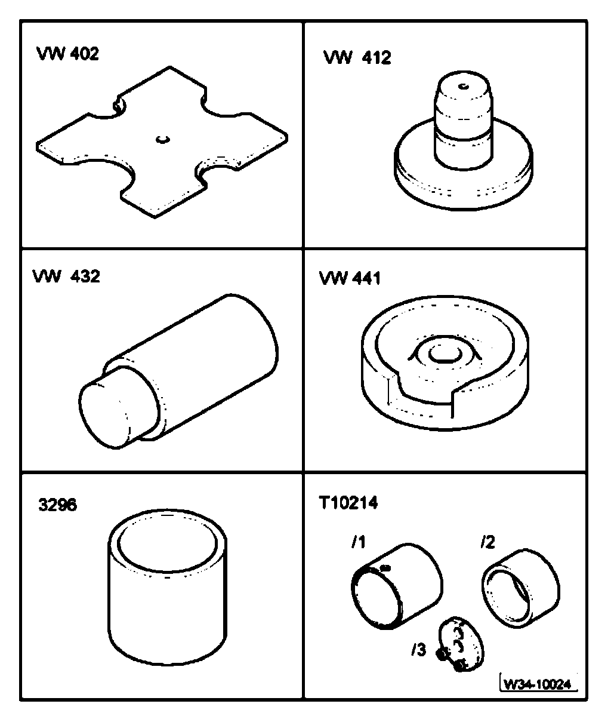
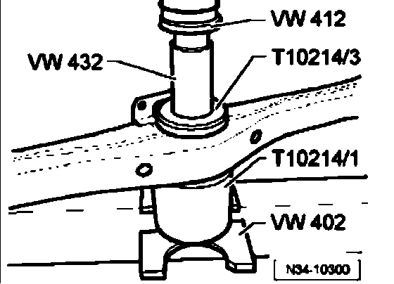
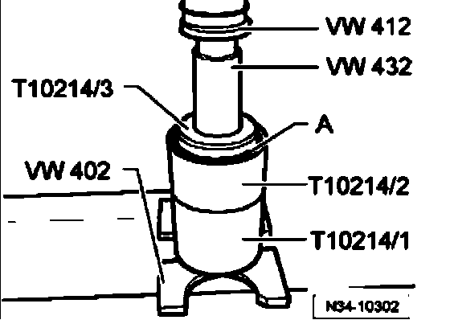
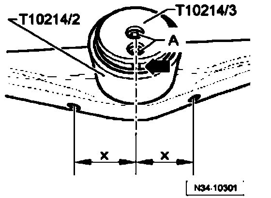
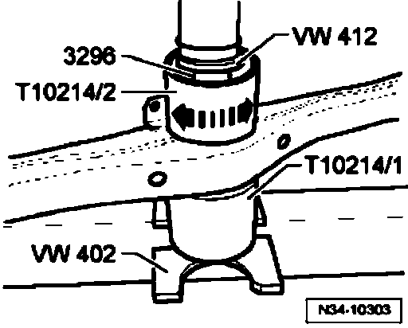

Procedures
Bonded rubber bushing in transmission support, replacing
Special tools and equipment required

^ Thrust plate VW 402
^ Thrust disc VW 412
^ Arbor VW 432
^ Base block VW 441
^ Tube 3296
^ Assembly fixture T10214
- Remove transmission support

- Press bonded rubber bushing out.
- Screw new bushing onto fixture T10214/3

- Press new bushing -A- with assembly fixture T10214/3 into guide sleeve T10214/2 until fixture T10214/3 is against sleeve T10214/2.
- Position new rubber bushing in assembly fixture in line with mounting in transmission support.

- Additionally, line up screws -A- or notch (arrow) of fixture T10214/3 and center between holes in support.
Dimensions "x" must be equal

- Press bonded rubber bushing into transmission support until guide sleeve T10214/2 can be turned by hand.
Note:
Do not press the bonded rubber bushing deeper in the transmission support than the height of the tube 3296. If necessary, use the base block VW 441 to press.
^ Install transmission support.